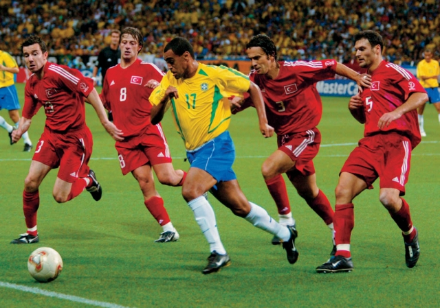
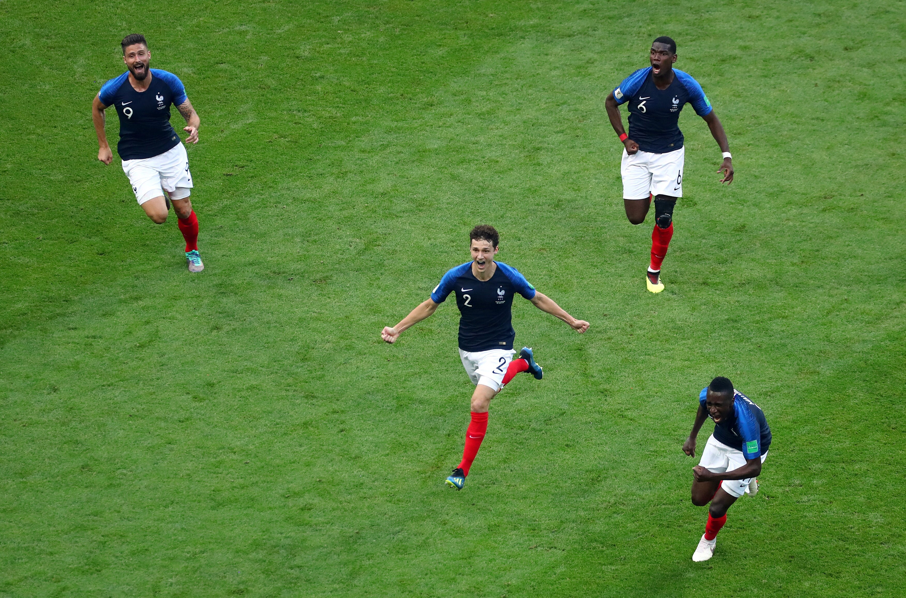
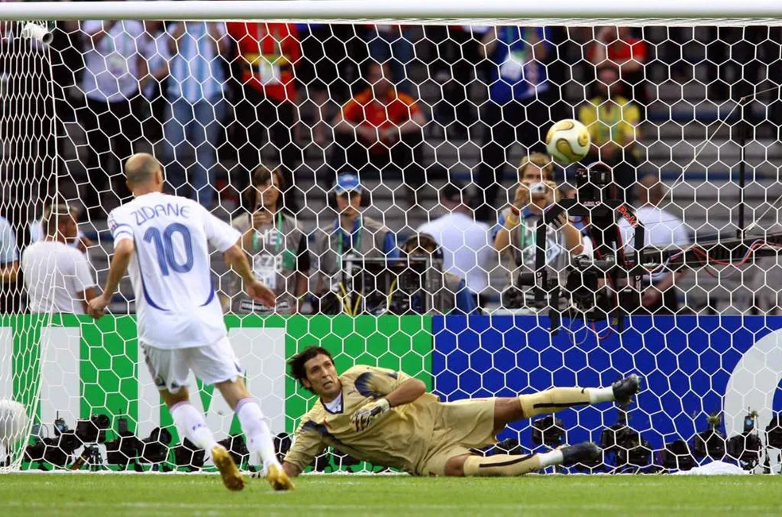
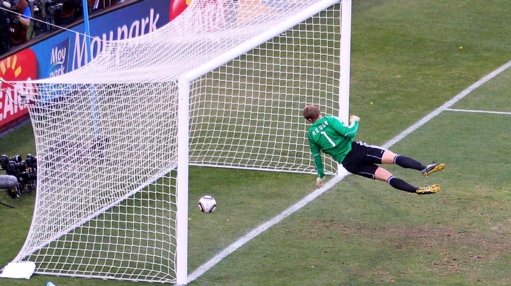
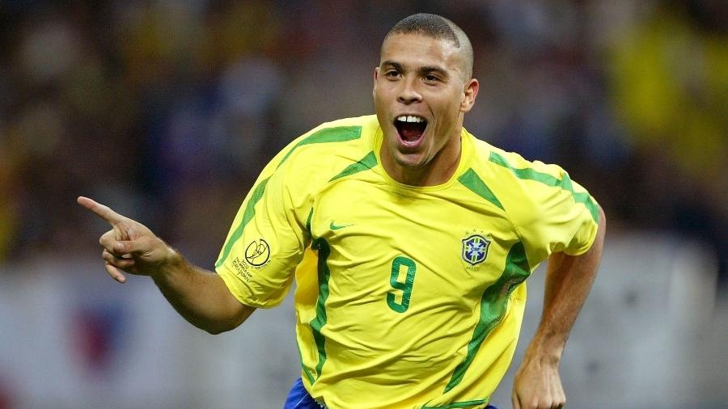
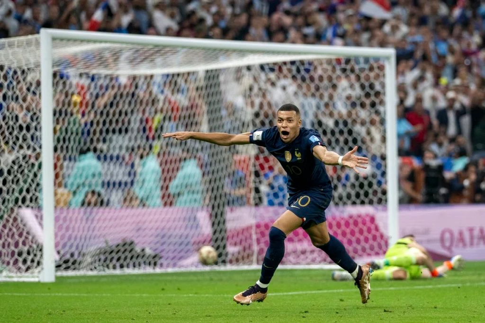
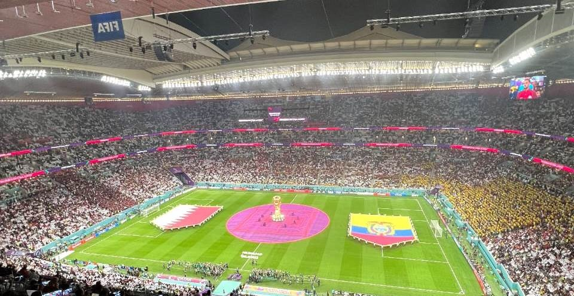
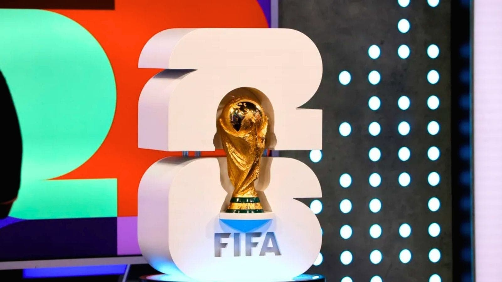
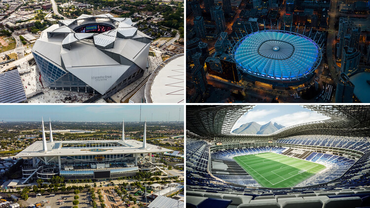

A Copa do Mundo é o maior evento esportivo do planeta, reunindo as melhores seleções de futebol de todo o mundo a cada quatro anos. A competição é organizada pela FIFA (Federação Internacional de Futebol Associação) e tem uma história rica e emocionante que remonta a 1930.







A Copa do Mundo é conhecida por sua atmosfera vibrante, com torcedores apaixonados, músicas, danças e celebrações que criam uma experiência única para os fãs de futebol. Além disso, o torneio é uma plataforma para mostrar talentos emergentes e proporcionar momentos inesquecíveis, como gols incríveis, defesas espetaculares e reviravoltas emocionantes.
Este será um ano inedito na copa do mundo, isso porque pela primeira vez na história das copas do mundo, 48 seleções irão participar do maior evento internacional de esportes do planeta, o que promete ser uma edição histórica e emocionante para os fãs de futebol em todo o mundo.


A copa do mundo será realizada em três países esse ano, Estados Unidos, Canadá e México, sendo a primeira da história realizada em três países simultaniamente, teram no total 16 estádios e 104 partidas.